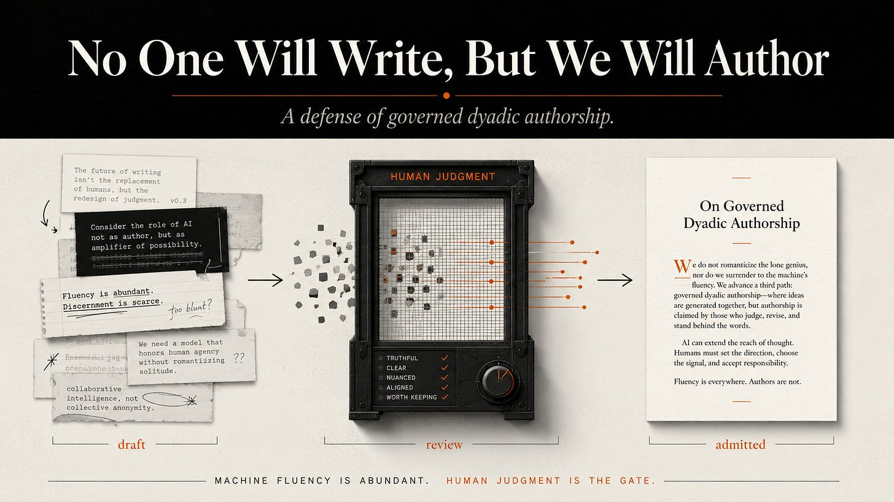

Nobody writes code anymore — or that’s the shorthand, and the shorthand is closer to true than not. Google says three-quarters of its new code is now drafted by AI and approved by engineers. The most careful independent measurement puts the industry-wide figure lower, around a quarter of production code, and developer trust in machine-drafted code has actually fallen as adoption climbed. So the transition is real — engineers accept authorship of code they didn’t type, and argue about it, at the same time. What matters is the shape of the settlement they’re converging on: authorship means deciding what the thing should do, rejecting the attempts that don’t do it, and answering for it when it breaks. Not keystrokes. Control.
Say the same about an essay and watch the room change temperature.
Eventually, nobody will write prose either — not hand-to-page, first-word-to-last — and that transition is meeting harder resistance, some of it worth respecting. Code is functional; it runs or it doesn’t, and “did a human really make this” barely matters next to “does it work.” A sentence makes a different offer: that a mind produced it, and the mind’s presence is part of what you’re being handed. Asking a reader to accept “a directed process produced this, and I stand behind every word” is genuinely harder than asking an engineer to accept the equivalent. That isn’t luddism. That’s a real difference in what the object is for.
The legal system has already converged on the right question. It did not wait for essayists to finish the argument engineers started.
The question the law already asks
Two separate things are true, and which is which matters.
The first is court-settled. A machine cannot be an author. The D.C. Circuit affirmed it in Thaler v. Perlmutter, and the Supreme Court declined to revisit it in 2026. That’s the floor, and it’s firm. Notably, the court was explicit that it was not deciding the harder question — how much machine contribution is compatible with a human authorship claim. That line-drawing it left open.
The second is where writers actually live, and it comes from the U.S. Copyright Office’s guidance rather than a courtroom: works made with AI assistance can be protected when the human exercised genuine creative control over the work’s expression. The Office has registered hundreds of such works. Its line isn’t hand-versus-tool. It’s control-versus-abdication. And it is explicit about the failure mode: a prompt alone is not control. Type a request, take what comes out, and the expressive choices belong to the machine. Direct the expression — shape it, reject it, rebuild it, stand behind the specific words as chosen — and the authorship is yours, evaluated case by case, the way it always was.
That’s agency guidance, not settled case law. But notice what it means: the question that will govern this territory is already written, and it’s the same question the code world converged on without calling a lawyer. Who controlled what the words say?
The gap: control is claimed, never shown
The standard advice for meeting that test is to save your drafts and write a paragraph describing your process. Better than nothing. Also exactly the evidence a skeptic has every reason to discount — because it’s the one thing every writer could produce whether or not it’s true. An assertion of control is not evidence of control. It’s a longer assertion.
What’s missing isn’t a new legal category. It’s a way to make the existing one checkable — the distance code closed with tests and review, prose hasn’t closed with anything. Lets call the practice provable control: not a redefinition of authorship, a discipline for demonstrating you meet the definition that already governs it.
Three marks, each independently checkable:
Origination. Did the claims, positions, and distinctive moves come from you, demonstrably, before generation? Not the prompt — the position. A standing body of work is dated, public, and checkable against what came out. A prompt is a wish.
Exercised selection. Did anything get killed? Control has teeth. A process with no discard pile isn’t directing anything; it’s countersigning.
Independent verification. Check the first two marks without taking my word?
The third mark is the expensive one, the one nobody builds. So instead of arguing for it in the abstract, let me show you what happened when I built it
The Twain test
Before pointing any verification at my own published work, I wanted to know whether the method could detect authorial voice at all — and, more importantly, whether it could fail. A test that can’t fail isn’t a test. So I ran it on someone else’s voice first: Mark Twain’s, because he’s safely in the public domain, and because his signature famously lives in cadence and comic timing rather than in any vocabulary a machine could cheaply borrow.
The setup: a bounded seed of exactly 6,716 words — passages from Life on the Mississippi and Sketches New and Old, both taken from their Project Gutenberg editions — and one fixed, neutral prompt: describe a small town preparing for the first hard rain after a long dry season. Three texts were generated. One with no seed at all: the control, the voice of nobody. One seeded with Twain. One seeded with my own body of work, as a comparison.
Then two independent estimates of how much each text belonged to its seed. First, the generating process scored its own output. Second — separately, blind, with no access to the first number — a reader model from a different company entirely scored the same texts. The voice question was decomposed into scored dimensions — cadence, diction, sentence architecture, narrative stance, structural habits, how concrete details get chosen, how much generic residue remains, and whether the seed’s influence was transformed into new writing or merely copied. scored dimension by dimension, then checked by the same blind cross-provider reader under the same pre-declared rules, : every single dimension landed within one point. The features were real.
The qualitative finding survived everything: the Twain-seeded piece was judged, blind, to be genuinely more distinctive than the unseeded control — channeling Twain’s rhythm and comic architecture while reproducing not one sentence of his. My favorite specimen: the seeded piece invented a running joke about townsmen solemnly misreading a barometer — one of them having mistaken a clock for it — which structurally rhymes with Twain’s famous sketch about his watch and the confidently wrong jeweler, without borrowing a word of it. That is what voice transfer looks like when it’s transformation rather than theft: the joke’s skeleton, not its skin.
Don’t take my word for any of this. Both texts — the voiceless control and the Twain-seeded piece — are appended below in full, exactly as they came out of the recorded run. Read them side by side and make your own call about whether the difference is real. That’s the entire point of provable control: the evidence should survive without me vouching for it.
That’s what the method proved on Twain: it can detect a voice and it can distinguish channeling from copying.
Then I pointed it at myself
Only after the Twain shakedown did I run the same protocol against two essays I’d actually written for publication — same dimensional scoring, same blind cross-provider reader, same rules fixed in advance, plus a freshly generated generic-commentary control on the same topic so the essays had something voiceless to be measured against.
Both essays converged: every dimension within one point between the self-read and the blind independent read, and both landed inside or above the ranges I’d originally claimed for how much of the work was distinctively mine rather than what any competent system would produce on the topic. Against the generic control, both essays cleared it on nine of ten dimensions — the tenth being reproduction risk, where an essay quoting a real research paper unavoidably carries slightly more than a control that quotes nothing, and where pretending otherwise would be exactly the kind of grade inflation this whole apparatus exists to prevent.
Why this isn’t just me hoping
It would be convenient if directed AI writing preserved a human voice by default. It doesn’t. The large-scale research on AI-assisted essays is blunt: quality rises and structural diversity collapses at the same time — in one study of nearly seven thousand essays, most of the variance in how writers structure their work simply vanished under AI assistance. But inside that same research is the finding that matters here: the collapse tracked how the tool was used, and on at least some dimensions, specific and directed interaction reversed the homogenization outright. The researchers’ own conclusion was that homogenization looks like a function of interaction design, not an intrinsic property of the technology.
That is the mechanism under provable control, not just its excuse. Origination and exercised selection are what directed interaction is. Independent verification is how you show — rather than assert — that the direction happened.
What I’m not claiming
Not that a machine can author anything; it can’t. Not that my method is external validation — the independent reader is another model, cross-provider agreement is real evidence. Not that a verification habit answers the person whose paid byline this technology displaced, or the reader who wants the plain fact of origin regardless of any control argument. And not that a cheap imitation of this couldn’t become a fig leaf; a token verification step run once, waved at skeptics, would be worse than nothing, because it would wear the costume of proof.
The claim is narrower and sturdier: the legal test already exists, it already turns on control rather than keystrokes — and there is a difference in kind between claiming you met it and building something that could have shown you didn’t. Mine showed exactly that, once, on Twain, on a bar I set before I knew the answer. Which is the only reason you should care that it hasn’t shown it since.
The law asks: did you control the expression?
Most answers are longer versions of "trust me."
Mine is a test built so it could fail.Exhibit A — The control: no seed, the voice of nobody
Generated from the fixed prompt with no seed corpus. Reproduced verbatim from the recorded run.
The town had been waiting for rain so long that even the dust seemed tired. By noon the sky had lowered into a gray sheet, and people began doing the small practical things that hope requires. Shopkeepers pulled their crates inside. Children were sent to gather laundry from sagging lines. At the garage, two men cleaned leaves from the gutter with a bent rake while arguing about whether the storm would pass north again.
The dry creek behind the school still held only stones and a few stubborn weeds, but teachers moved the younger classes away from the windows because thunder makes arithmetic impossible. On porches, old chairs were dragged back from the edge. Buckets appeared under leaks that had been forgotten during the months of sun. The grocer taped a note to the door asking customers to wipe their feet if the rain finally came, as though mud were already a fact.
By evening the whole town had become attentive. Dogs were called in. The last truck from the fields came home early. People stood outside longer than they needed to, pretending to check doors, gates, and drains, but really listening for the first hard drops on tin roofs. When the wind changed, it carried the smell of wet earth before the water itself arrived. For a moment nobody moved. Then the rain struck, loud and sudden, and the town received it like news it had been afraid to believe.
Exhibit B — The Twain-seeded piece
Same prompt, seeded with 6,716 words of Twain. Reproduced verbatim from the recorded run. Not one sentence of Twain’s appears in it — check for yourself; the sources are free at Project Gutenberg.
By four o’clock the town had quit pretending it was not watching the sky. It had watched that sky for six weeks, and been cheated so often that an old resident could look at a cloud and tell you not only whether it meant rain, but what sort of lie it had come to tell. Still, this afternoon the clouds had a businesslike look about them. They did not loiter and decorate the horizon, as idle clouds will; they came on with their sleeves rolled up.
The first preparation was talk. This is always the cheapest and most abundant preparation in a small town. Men collected in doorways to explain the barometer to one another, though no two of them had seen the same barometer, and one had mistaken a clock for it. The women took in wash with the brisk contempt of people who have been right before. Boys were sent to shut windows and returned by way of every puddle that did not yet exist. Even the dogs understood that something official was pending, and lay under wagons with the solemnity of jurors.
Down by the dry creek, a deputation of children assembled to see whether it would remember its profession. The creek had been retired from water so long that the frogs had begun to look like tenants in default. At the store, Mr. Bell moved the sugar barrels away from the leak in the roof, a leak which had not leaked since May but had kept its reputation entire.
Then a drop hit the courthouse steps, raising a dark round mark as large as a coin. Everybody saw it; nobody admitted to staring. Another struck the dust, and another. In half a minute the street was spotted like a speckled horse, and then the storm came down in earnest, not as a visitor, but as an owner returning to property.
Legal grounding: U.S. Copyright Office, “Copyright and Artificial Intelligence, Part 2: Copyrightability” (Jan. 2025) — agency guidance holding that human creative control over expression, assessed case by case, supports authorship of AI-assisted works, and that prompts alone do not; and Thaler v. Perlmutter (D.C. Cir. 2025, cert. denied 2026), settling only that a machine cannot be an author. Homogenization findings draw on recent large-scale studies of AI-assisted essay writing, including work analyzing 6,875 essays across human, AI, and hybrid conditions. Twain seed: passages from Life on the Mississippi (Project Gutenberg eBook 245) and Sketches New and Old (Project Gutenberg eBook 3189), both public domain. Exhibits are verbatim outputs of the recorded verification run. The method’s full rubric, tooling, and infrastructure remain undisclosed.